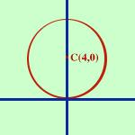

|
In tal caso a = 0 e c = 0 e l'equazione della circonferenza diventa x2+ y2 + by = 0 Basta sommare i due fatti: Siccome manca il termine ax la circonferenza ha il centro su un punto dell'asse delle y (equazione x=0), inoltre poiche' manca il termine noto la circonferenza passa per l'origine; Esempio, considero la circonferenza:  x2+ y2 - 8y = 0 il centro vale xo = -a/2 = 0 yo = -b/2 = 4 ed il raggio vale r = = E' la circonferenza di centro C(0,4) e raggio 4 |